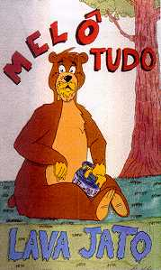

LAVA-JATO
- 4 músicas (9 min) -
|
|

|
| 1. R.E.I. |
2:04 |
| 2. caminho |
2:32 |
| 3. esquecer |
2:14 |
| 4. frankenstein |
1:56 |
|
- letras disponíveis -
características:
| qualidade de gravação |
adesivo |
letras das músicas |
|
média
|
não
|
sim
|
| cidade : |
rio de janeiro - RJ - Brasil |
| 1º ensaio : |
fev98 |
| gravação : |
jan99 |
| cantam em : |
português |
| influências : |
millencolin |
|
| integrantes: |
baixo |
- |
thiago |
| |
batera |
- |
duda |
| |
guitarra |
- |
andré |
| |
guitarra |
- |
dudu |
| |
vocal |
- |
thiago |
|
comentários:
"
segunda fita demo deste quarteto carioca que faz um som que lembra
screeching weasel no tempo de "my brain hurts", com côros bem feitos
e aquelas puxadas características no vocal, que se destaca, bem
entonado. o ska dá o toque especial às músicas, onde a temática de
todas, sem exceção, é relacionamentos. só precisa ouvir uma vez para
sair cantarolando os refrões "pegajosos".
"